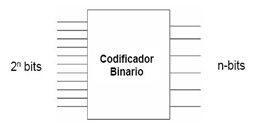
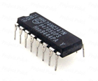

Un codificador de prioridad es otro tipo de circuito combinado similar a un codificador binario, excepto que genera un código de salida basado en la entrada con la prioridad más alta. Además, un codificador con prioridad ofrece una flexibilidad adicional en lo relativo a que puede utilizarse en aplicaciones que requieren detección de prioridad. La función de prioridad significa que el codificador producirá una salida BCD correspondiente al dígito decimal de entrada de más alto orden que se encuentre activo, e ignorará cualquier otra entrada de menor orden que esté activa. Existe un codificador que representa esta misma función decimal (9 entradas) a BCD (4 salidas). El 74HC147 es un codificador de prioridad con entradas decimales activas a nivel Bajo y salidas BCD activas a Nivel Bajo, esto quiere decir que si nuestra salida de BCD es cero se refiere a que ninguna de las entradas está activa.
